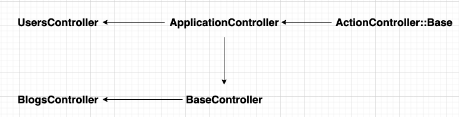
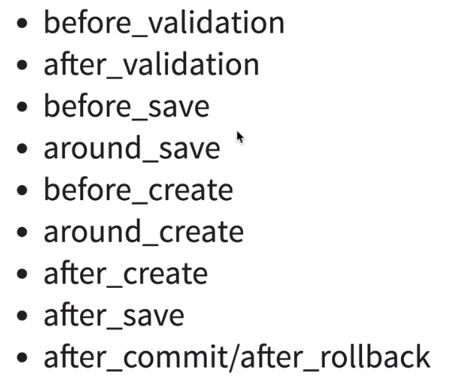
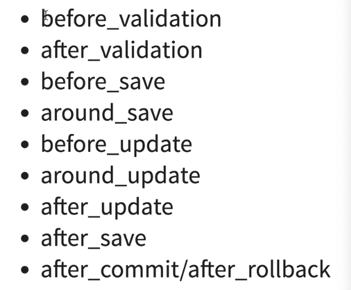
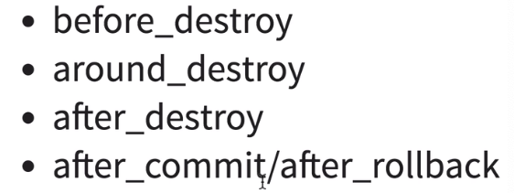
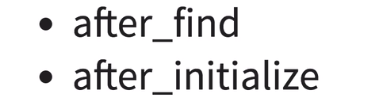
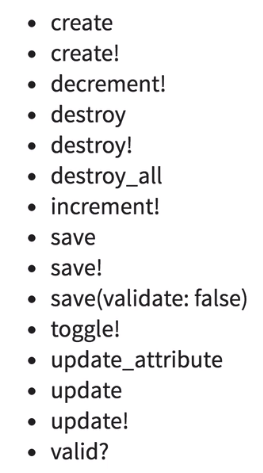
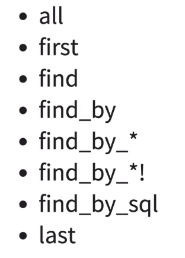
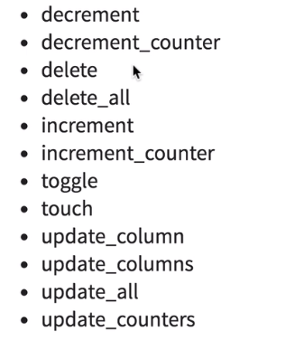

Rails基础
Ruby On Rails
基础介绍
Rails可以理解为一个快速构建Web应用的框架，本身基于Ruby开发，拥有很强的灵活性。
如何下载与使用Rails？ 这里的前提是你已经下载好了Ruby
gem install rails # 通过ruby工具(当成功下载并使用Ruby时，该工具会一同配置好的) 下载 rails
rails -v # 如果正常下载则显示Rails版本 这里我在Mac上下载好rails并使用时，遇到了报错显示，显示rails还没有立刻被下载成功，需要再执行上面下载命令（但是并没什么用，至少我是这样，有的人说是有一个延迟时间）：
Rails is not currently installed on this system. To get the latest version, simply type:
$ sudo gem install rails
You can then rerun your "rails" command. 这里我的解决方式为：
gem env # 显示gem 环境变量
RubyGems Environment:
-RUBYGEMS VERSION: 3.1.2
-RUBY VERSION: 2.7.1 (2020-03-31 patchlevel 83) [x86_64-darwin19]
-INSTALLATION DIRECTORY: /usr/local/lib/ruby/gems/2.7.0 # 这里是重点 ！！！
-USER INSTALLATION DIRECTORY: /Users/xxx/.gem/ruby/2.7.0
... 我们按照显示的INSTALLATION DIRECTORY,访问并进入bin目录，查看是否有rails命令, 如果有就说明安装的没问题，并使用这个rails,看是否能正常使用。如果都OK，则把这里的地址添加到环境变量即可。
Ruby,rvm,gem,gems,bundle,gemfile的区别?
- Ruby 是一种面向对象的脚本语言
- rvm 是一个命令行工具，提供多版本的Ruby环境管理与切换
- gem 是使用ruby写的软件包，每个gem都有名称，版本和平台，每个gem都有规范的格式，Rails就是一个gem
- RubyGems简称gems，允许下载，安装，使用系统上的gem
- ruby项目依赖一系列的ruby gems，bundler是一个管理构建工具，bundle本身也是一个gem，可以理解为Maven
- gemfile是描述gem之间依赖的文件，定义从哪个源找到这些gem，使用哪个版本，类似与
pom.xml
快速创建一个博客项目：
# 自动生成一个叫blog的Rails项目，你也可以通过使用 rails new --help 查看可以使用的参数
rails new blog
# 生成一个只提供API的后端接口项目
rails new blog --api
# 生成一个最小，干净的Rails项目（初学者不建议，因为很多东西需要自己配置了）
rails new blog --minimal 这里可能会报错，显示：infind_spec_for_exe': can't find gem bundler (= 2.4.1) with executable bundle 错误信息。
这里我们可以查看gem内部是否有合格的bundler
gem list --local # 查看本地gem 管理集合 如果发现bundler的版本与报错信息不符合，我们可以下载一个新的版本的bundler。
一切OK后，就可以从新执行：rails new blog创建一个新的项目。
国内情况下，bundler install会很慢，我们可以修改源
中文老版本教程：https://ruby-china.github.io/rails-guides/getting_started.html （不建议因为版本老旧有些代码不生效）
中文新教程：https://github.com/GengCen-Qin/rails-quotes （会更全面一些，主要介绍Rails7的很多特性）
英文新版本教程：https://guides.rubyonrails.org/getting_started.html
Bootstrap
rails new demo --css=bootstrap（这里的也可以指定其他css框架，使用rails new -h可以查看）一切都帮你配置好- 视频教程：https://www.bilibili.com/video/BV1w84y1p7eq/?spm_id_from=333.337.search-card.all.click
- 引入一些简单的样式
<!--引入简单的css样式,application.html.erb文件中-->
<link rel="stylesheet" href="https://cdn.simplecss.org/simple.min.css">数据库
这里我们以操作Mysql为例，因为Rails本身对常用的数据库都有支持，我们只修改配置信息，通过强大的ORM框架，很容易的迁移到其他的数据库，而不需要修改我们的业务代码。比如开发环境使用sqlite，正式环境使用mysql
- Gemfile 引入：
gem "mysql2" - bundle 下载依赖，记住每次下载新的依赖后，都需要重启应用刷新
- 修改
config/database.yml文件
default: &default
adapter: mysql2
encoding: utf8
pool: <%= ENV.fetch("RAILS_MAX_THREADS") { 5 } %> // ENV.fetch() 获取环境变量中寻找信息
host: 127.0.0.1
username: root
password: 123456
timeout: 5000
development: // 开发环境
<<: *default // 继承上面
database: ruby_development
test: // 测试环境
<<: *default
database: ruby_test
production: // 生产环境
<<: *default
database: ruby_production模型
这里我们将数据库中的一张表与一个模型相对应，和Java的Spring中Model是一样的
rails g model User name:string age:integer # 自动创建User模型
# 以下是该命令生成的文件
invoke active_record
# 记录模型的信息
create db/migrate/20230106005931_create_users.rb
# 模型类定义
create app/models/user.rb
invoke test_unit
# 测试文件
create test/models/user_test.rb
create test/fixtures/users.yml`20230106005931_create_users.rb，这是一个迁移文件，也就是说我们现在Rails中定义整张表的结构，等完成后，通过指令在数据库中创建会修改这张表，这里我们看到文件的前面有一个时间戳，也就说Rails操作数据库是有版本控制的
修改db/migrate/20221228104215_create_users.rb
class CreateUsers < ActiveRecord::Migration[7.0]
def change
# users 是表名
create_table :users do |t|
# users表的字段
t.string :username # string 代表就是 数据库中的varchar
t.string :password
# 自动生成时间戳：create_at , update_at
t.timestamps
# 额外的还会生成 主键id
end
end
end移植到数据库，也就是根据上面的文件，在数据库中创建对应的表
rake db:create # 创建对应的数据库
rake db:migrate # 会将上面的定义的users表结构创建到数据库中在Web开发中最常见的需求就是增晒改查了，Rails通过routes.rb来定义路由
当使用resources :users, 就会自动生成对user信息的增删改查等请求路径
resources :users # 这里使用模型的复数
############### 下面是使用 rails routes 显示自动生成的路由匹配
Prefix Verb URI Pattern Controller#Action
users GET /users(.:format) users#index
POST /users(.:format) users#create
new_user GET /users/new(.:format) users#new
edit_user GET /users/:id/edit(.:format) users#edit
user GET /users/:id(.:format) users#show
PATCH /users/:id(.:format) users#update
PUT /users/:id(.:format) users#update
DELETE /users/:id(.:format) users#destroy
############### 在资源使用时，会对资源加入后缀 _path 或者 _url
path 是相对路径
url 是绝对路径
如对于user而言：
(prefix_path/url) 请求路径
users_url # => http://localhost:3000/users
users_path # => /users
user_path(1) # => /users/1
user_url(1) # => http://localhost:3000/users/1比如我们想通过命令行快速查询数据库某些信息时，可以通过rails的命令行控制台来操作
rails c按照定义的模型可以进行增删改查，这里以User为例
User.create username: 'qsc',password: '123456' # 创建一条数据
User.all.to_a # 查看数据
user = User.first # 获取第一条数据，并赋值给user变量
user.username # 输出name
user.password # 输出password
user.username = 'TLL' # 修改变量值
user.save # 修改改数据
user.destory # 删除该数据Session
# 这里是将当前用户的id报错到session中
session[:user_id] = user.idFilter
在一般用户登陆操作，或者用户请求追踪，可以使用
- before_filter 在action之前执行 , rails 5 以后的版本 before_filter 已更新为 before_action
- around_filter 在action前后执行
- after_filter 在action之后执行
Routes
和Spring中的ResquestMapping类似
自定义路由：
# 当访问 /users/1 时， 执行UsersController中的show方法
get '/users/:id', to: 'users#show'
or
get '/users/:id' => 'users#show'
# 命名路由
get '/users/:id', to: 'users#show', as: "user"
# in view or action
user_path(user.id) # => /users/2
user_path(user) # 如果user中含有id，也会自动识别出
user_url(user) # http://localhost:3000/users/2Restful请求风格
- get
- post
- put/patch
- delete
同一个Url可以拥有不同的请求方式，不同的请求方式可以访问不同的方法
resources :users
Prefix Verb URI Pattern Controller#Action
users GET /users(.:format) users#index
POST /users(.:format) users#create
new_user GET /users/new(.:format) users#new
edit_user GET /users/:id/edit(.:format) users#edit
user GET /users/:id(.:format) users#show
PATCH /users/:id(.:format) users#update
PUT /users/:id(.:format) users#update
DELETE /users/:id(.:format) users#destroy 可以通过rails routes 查看系统中所有信息
控制器设定
controller :welcome do
# 默认访问：welcome#hello
get '/welcome/hello'
end
Prefix Verb URI Pattern Controller#Action
welcome_hello GET /welcome/hello(.:format) welcome#hello同时定义多个资源
resources :users,:sessions # 资源都为复数单数资源，比如用户自身的信息编辑，这里可以看到少了通过id查询的方式
resource :user # 这里吧 resources 改为 resource
Prefix Verb URI Pattern Controller#Action
new_user GET /user/new(.:format) users#new
edit_user GET /user/edit(.:format) users#edit
user GET /user(.:format) users#show
PATCH /user(.:format) users#update
PUT /user(.:format) users#update
DELETE /user(.:format) users#destroy
POST /user(.:format) users#create控制器命名空间，会统一加入前缀，这里我们可以看到Controller为
admin/users,那么Controller是如何设定的呢？
namespace :admin do
resources :users
end
Prefix Verb URI Pattern Controller#Action
admin_users GET /admin/users(.:format) admin/users#index
POST /admin/users(.:format) admin/users#create
new_admin_user GET /admin/users/new(.:format) admin/users#new
edit_admin_user GET /admin/users/:id/edit(.:format) admin/users#edit
admin_user GET /admin/users/:id(.:format) admin/users#show
PATCH /admin/users/:id(.:format) admin/users#update
PUT /admin/users/:id(.:format) admin/users#update
DELETE /admin/users/:id(.:format) admin/users#destroyclass Admin::UsersController < ApplicationController
endscope ，不想在URL中显示 /admin的前缀
# 方式1
scope module: 'admin' do
resources :users
end
# 方式2
resources :users, module: 'admin'
# 生成路由
Prefix Verb URI Pattern Controller#Action
users GET /users(.:format) admin/users#index
POST /users(.:format) admin/users#create
new_user GET /users/new(.:format) admin/users#new
edit_user GET /users/:id/edit(.:format) admin/users#edit
user GET /users/:id(.:format) admin/users#show
PATCH /users/:id(.:format) admin/users#update
PUT /users/:id(.:format) admin/users#update
DELETE /users/:id(.:format) admin/users#destroy嵌入路由
resources :users do
# 这里表示 一个user内有多个blogs
resources :blogs
end
Prefix Verb URI Pattern Controller#Action
user_blogs GET /users/:user_id/blogs(.:format) blogs#index
POST /users/:user_id/blogs(.:format) blogs#create
new_user_blog GET /users/:user_id/blogs/new(.:format) blogs#new
edit_user_blog GET /users/:user_id/blogs/:id/edit(.:format) blogs#edit
user_blog GET /users/:user_id/blogs/:id(.:format) blogs#show
PATCH /users/:user_id/blogs/:id(.:format) blogs#update
PUT /users/:user_id/blogs/:id(.:format) blogs#update
DELETE /users/:user_id/blogs/:id(.:format) blogs#destroy
users GET /users(.:format) users#index
POST /users(.:format) users#create
new_user GET /users/new(.:format) users#new
edit_user GET /users/:id/edit(.:format) users#edit
user GET /users/:id(.:format) users#show
PATCH /users/:id(.:format) users#update
PUT /users/:id(.:format) users#update
DELETE /users/:id(.:format) users#destroy嵌入式路由，不要超过一层
排除不需要的action和请求方法，因为rails路由匹配是自上而下的，影响效率，并可能出现 bug
resources :users , only: [:index,:destroy] # users资源，只生成 index，destroy 访问行为添加自定义的RESTFUL路由
resources :users do
member do # member 表示单个资源，所以会自动生成带有id的访问
post :status
end
collection do # collection 表示集合资源，
get :online
end
end
Prefix Verb URI Pattern Controller#Action
status_user POST /users/:id/status(.:format) users#status
online_users GET /users/online(.:format) users#online
users GET /users(.:format) users#index
POST /users(.:format) users#create
new_user GET /users/new(.:format) users#new
edit_user GET /users/:id/edit(.:format) users#edit
user GET /users/:id(.:format) users#show
PATCH /users/:id(.:format) users#update
PUT /users/:id(.:format) users#update
DELETE /users/:id(.:format) users#destroy如果需要传入id，就是member方法，如果不需要，则是批量资源：collection，也可以这样定义
resources :users do
post :status, on: :member
get :online, on: :collection
end非资源路由
# /photos/show/1
# /photos/show
# /photos #=> index action 括号代码可选参数
get ':controller(/:action(/:id))'
# /photos/show/1/2
get ':controller/:action/:id/:user_id'match，控制请求方式，例如：get或post请求
match 'photos',to: "photos#show", via: [:get,:post]
Prefix Verb URI Pattern Controller#Action
photos GET|POST /photos(.:format) photos#show匹配约束，使用正则表达式，Ruby中是没有设计开头和结尾的
# /photos/A12345
get 'photos/:id', to: 'photos#show', constraint: {
# 请求中的id的匹配规则
id: /[A-Z]\d{5}/
}
Prefix Verb URI Pattern Controller#Action
GET /photos/:id(.:format) photos#show {:constraint=>{:id=>/[A-Z]\d{5}/}}重定向
get "/stories",to: redirect('/articles')
Prefix Verb URI Pattern Controller#Action
stories GET /stories(.:format) redirect(301, /articles)Mount
mount AdminApp, at: '/admin'Controller
这里我们可以将一些公共函数写入BaseController，再将业务类继承BaseController，以达到方法公用

实例方法
params
获取get，post请求参数，可以通过Symbol或String访问到：params[:user],params["user"]
session
通过session记录当前用户信息: session[:user_id]
render
组织 HTTP Response
redirect_to
请求重定向,这些方法均可在Controller与View中使用
类方法
Filter
过滤器：before_action,after_action,around_action
CSRF
这是一种安全策略，具体信息：https://guides.rubyonrails.org/security.html#cross-site-request-forgery-csrf
Helper_method
将方法设定为Controller与View均可使用
日志：Rails.logger
这里info可以改为其他级别
Rails.logger.info "Information"ExceptHandle 异常拦截器
统一捕捉异常
class ApplicationController < ActionController::Base
# 发生 RecordNotFound 异常时，执行 record_not_found 函数
rescue_from ActiveRecord::RecordNotFound, with: :record_not_found
private
def record_not_found
render plain: "404 Not Found",status: 404
endModelBasic
conventions 约定大于配置
Model（单数） 数据表（复数），这里并不是单纯加个s，因为Person复数，表名为：people
class User -> 表：users
class Person -> people
class Blog -> blogs
默认创建：id , creat_at , update_at 字段
这里如果是使用生成器生成，想要修改表名，需修改：Model中指定：self.table_name=”” 和 migrate 移植文件
分页操作
官方网址：https://ddnexus.github.io/pagy/
- Gemfile添加：`gem ‘pagy’, ‘~> 6.0’
- 下载依赖：
bundle - 在ApplicationController 中引入,这样所有的子类都能使用该方法了
class ApplicationController < ActionController::API
include Pagy::Backend
end- 在业务控制器中使用
class UsersController < ApplicationController
def page
page = params[:page]
per = params[:per]
# 这里page(数据集合 , 分页的参数)，这里返回的一个数组，@pagy表示分页的参数新股
# @records 表示分页后的数据
@pagy, @records = pagy(User.all,page:page,items:per)
render json: {"records"=>@records,"count"=>@pagy.count}
end
end 这里我们可以按照需求将返回的Json任意组合
crud操作
查看
where()find_by()first()where().order().limit()
修改
@user = user.find()user.save()user.update_all
删除
user.destory()
Associations关联关系
- has_many : 一对多，多对多
- has_one ：一对一
- belongs_to : 一对一
- has_and_belongs_to_many : 多对多
Rails 跨域问题
https://blog.csdn.net/topswim/article/details/79311592
- Gemfile：
gem 'rack-cors', :require => 'rack/cors'
Rails 移植与回调
主要负责数据库版本管理，进行数据库迁移或回调
Migrations （ActiveRecord gem）
使用：
- rails g model 模型名 生成model文件与移植文件
- rails g migration 文件名 生成移植文件，比如对原有数据表做修改，文件名最好可表示意义
add_column :数据表 ,:字段名 ,字段类型- 也可以使用rails g migration 查看参数
Rake
- rails db:migrate 根据移植文件，向数据库中操作，每次更新到最新的数据库版本
- rails db:rollback 回退移植文件，这里我们也可以控制具体操作
- rails db:migrate:status 查看数据库状态
- rake -T 查看rake所有的命令
- rake db:version 查看当前数据库版本
- migrate文件内其实是把整个环境加载进来，所以我们也可以直接对数据进行操作
- Rake db:rollback step=2 向后回滚两个版本
永远不要修改已经提交的migration！！！
Callback
在增删改查的操作上添加的回调事件，在执行增删改查的时候同步触发一些逻辑
回调触发分类
- Create an Object
- Updating an Object
- Destorying an Object
- finding an Object
Create回调
 顺序也是严格按照图中的顺序执行。这些方法也都是类方法，可直接指定：before_save :update_username
需要注意：after_save 是已经存储到数据库了，但并未提交，如果在after_save针对模型又做出修改，不能再使用 self.save ,因为会触发死循环。
Update回调
Destroy回调
Find回调
触发callback的方法
触发after_find （基本不使用）
跳过callback的触发方法
Callback参数
class User ActiveRecord::Base
before_save :update_username,unless:proc {|user| user.evil?}
#or
before_save :update_username,if:proc {|user| !user.evil?}
endRails 事务
在Rails中对事务的支持，自动将模型的save,destory,回调封装到一个事务中
如何操作？
# will trigger rollback
# 这里Blog可以是类，或者是一个实例对象，都可以操作事务
Blog.transaction do
# save！如果失败，都会爆出异常
blog.save!
end
# will also trigger rollback
Blog.transaction do
#... 主动抛出异常
raise 'error'
end